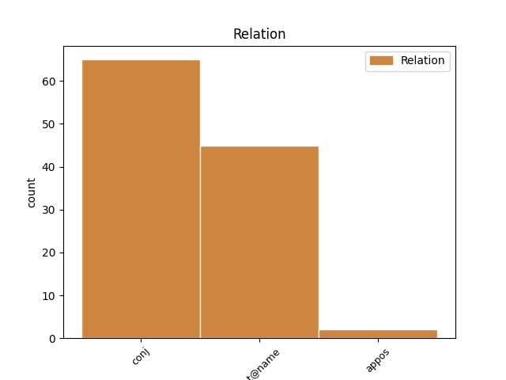
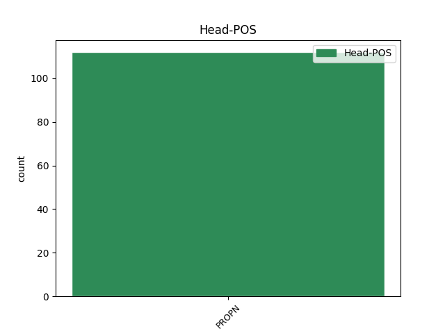
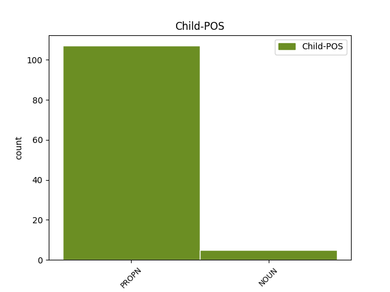

Distribution of features within this leaf



Agreement Rules sorted by frequency.
- When the dependent token is the conjunct(conj) of the head token, and the head token is PROPN and the dependent token is PROPN.
1 Польскiя _ _ _ _ 0 _ _ _
2 медыкi _ _ _ _ 0 _ _ _
3 едуць _ _ _ _ 0 _ _ _
4 працаваць _ _ _ _ 0 _ _ _
5 у _ _ _ _ 0 _ _ _
6 Германiю _ _ _ _ 0 _ _ _
7 , _ _ _ _ 0 _ _ _
8 нямецкiя _ _ _ _ 0 _ _ _
9 ўрачы _ _ _ _ 0 _ _ _
10 — _ _ _ _ 0 _ _ _
11 у _ _ _ _ 0 _ _ _
12 Вялiкабрытанiю _ _ _ _ 0 _ _ _
13 , _ _ _ _ 0 _ _ _
14 а _ _ _ _ 0 _ _ _
15 англiйскiя _ _ _ _ 0 _ _ _
16 ўрачы _ _ _ _ 0 _ _ _
17 — _ _ _ _ 0 _ _ _
18 у _ _ _ _ 0 _ _ _
19 ЗША _ _ _ _ 0 _ _ _
20 , _ _ _ _ 0 _ _ _
21 Канаду _ _ _ _ 0 _ _ _
22 , _ _ _ _ 0 _ _ _
23 Аўстралiю Аўстралiя PROPN NN Animacy=Inan|Case=Acc|Gender=Fem|Number=Sing 0 _ _ _
24 , _ _ _ _ 0 _ _ _
25 Новую _ _ _ _ 0 _ _ _
26 Зеландыю Зеландыя PROPN NN Animacy=Inan|Case=Acc|Gender=Fem|Number=Sing 23 conj _ SpaceAfter=No
27 . _ _ _ _ 0 _ _ _
1 На _ _ _ _ 0 _ _ _
2 некаторых _ _ _ _ 0 _ _ _
3 з _ _ _ _ 0 _ _ _
4 iх _ _ _ _ 0 _ _ _
5 спынiлася _ _ _ _ 0 _ _ _
6 ў _ _ _ _ 0 _ _ _
7 сваiм _ _ _ _ 0 _ _ _
8 выступленнi _ _ _ _ 0 _ _ _
9 на _ _ _ _ 0 _ _ _
10 калегii _ _ _ _ 0 _ _ _
11 старшыня _ _ _ _ 0 _ _ _
12 Рэспублiканскага _ _ _ _ 0 _ _ _
13 камiтэта _ _ _ _ 0 _ _ _
14 Беларускага _ _ _ _ 0 _ _ _
15 прафсаюза _ _ _ _ 0 _ _ _
16 работнiкаў _ _ _ _ 0 _ _ _
17 аховы _ _ _ _ 0 _ _ _
18 здароўя _ _ _ _ 0 _ _ _
19 Алена Алена PROPN NNP Animacy=Anim|Case=Nom|Gender=Fem|Number=Sing 0 _ _ _
20 Бельская Бельская PROPN NNP Animacy=Anim|Case=Nom|Gender=Fem|Number=Sing 19 flat@name _ SpaceAfter=No
21 . _ _ _ _ 0 _ _ _
1 У _ _ _ _ 0 _ _ _
2 iнтэрнэце _ _ _ _ 0 _ _ _
3 ўжо _ _ _ _ 0 _ _ _
4 сёння _ _ _ _ 0 _ _ _
5 можна _ _ _ _ 0 _ _ _
6 знайсцi _ _ _ _ 0 _ _ _
7 мноства _ _ _ _ 0 _ _ _
8 падобных _ _ _ _ 0 _ _ _
9 прапаноў _ _ _ _ 0 _ _ _
10 з _ _ _ _ 0 _ _ _
11 Польшчы _ _ _ _ 0 _ _ _
12 , _ _ _ _ 0 _ _ _
13 Чэхii _ _ _ _ 0 _ _ _
14 , _ _ _ _ 0 _ _ _
15 Iспанii Iспанii PROPN RB Animacy=Inan|Case=Gen|Gender=Fem|Number=Sing 0 _ _ _
16 і _ _ _ _ 0 _ _ _
17 iншых _ _ _ _ 0 _ _ _
18 краiн краiн NOUN NN Animacy=Inan|Case=Gen|Gender=Fem|Number=Plur 15 conj _ SpaceAfter=No
19 . _ _ _ _ 0 _ _ _
1 У _ _ _ _ 0 _ _ _
2 аўторак _ _ _ _ 0 _ _ _
3 , _ _ _ _ 0 _ _ _
4 20 _ _ _ _ 0 _ _ _
5 сакавіка _ _ _ _ 0 _ _ _
6 , _ _ _ _ 0 _ _ _
7 брытанская _ _ _ _ 0 _ _ _
8 газета _ _ _ _ 0 _ _ _
9 Daily _ _ _ _ 0 _ _ _
10 Telegraph _ _ _ _ 0 _ _ _
11 са _ _ _ _ 0 _ _ _
12 спасылкай _ _ _ _ 0 _ _ _
13 на _ _ _ _ 0 _ _ _
14 дыпламатычныя _ _ _ _ 0 _ _ _
15 крыніцы _ _ _ _ 0 _ _ _
16 паведаміла _ _ _ _ 0 _ _ _
17 , _ _ _ _ 0 _ _ _
18 што _ _ _ _ 0 _ _ _
19 кіраўнікі _ _ _ _ 0 _ _ _
20 МЗС _ _ _ _ 0 _ _ _
21 ЕС _ _ _ _ 0 _ _ _
22 , _ _ _ _ 0 _ _ _
23 у _ _ _ _ 0 _ _ _
24 прыватнасці _ _ _ _ 0 _ _ _
25 , _ _ _ _ 0 _ _ _
26 уключаць _ _ _ _ 0 _ _ _
27 у _ _ _ _ 0 _ _ _
28 " _ _ _ _ 0 _ _ _
29 чорны _ _ _ _ 0 _ _ _
30 спіс _ _ _ _ 0 _ _ _
31 " _ _ _ _ 0 _ _ _
32 Асму Асма PROPN NNP Animacy=Anim|Case=Acc|Gender=Fem|Number=Sing 0 _ _ _
33 Асад _ _ _ _ 0 _ _ _
34 , _ _ _ _ 0 _ _ _
35 жонку жонка NOUN NN Animacy=Anim|Case=Acc|Gender=Fem|Number=Sing 32 appos _ _
36 прэзідэнта _ _ _ _ 0 _ _ _
37 краіны _ _ _ _ 0 _ _ _
38 Башара _ _ _ _ 0 _ _ _
39 Асада _ _ _ _ 0 _ _ _
40 . _ _ _ _ 0 _ _ _
1 — _ _ _ _ 0 _ _ _
2 Насамрэч _ _ _ _ 0 _ _ _
3 , _ _ _ _ 0 _ _ _
4 мне _ _ _ _ 0 _ _ _
5 раней _ _ _ _ 0 _ _ _
6 не _ _ _ _ 0 _ _ _
7 хапала _ _ _ _ 0 _ _ _
8 ўпэўненасці _ _ _ _ 0 _ _ _
9 ў _ _ _ _ 0 _ _ _
10 сабе _ _ _ _ 0 _ _ _
11 , _ _ _ _ 0 _ _ _
12 і _ _ _ _ 0 _ _ _
13 я _ _ _ _ 0 _ _ _
14 ніколі _ _ _ _ 0 _ _ _
15 не _ _ _ _ 0 _ _ _
16 магла _ _ _ _ 0 _ _ _
17 падумаць _ _ _ _ 0 _ _ _
18 , _ _ _ _ 0 _ _ _
19 што _ _ _ _ 0 _ _ _
20 буду _ _ _ _ 0 _ _ _
21 ўдзельнічаць _ _ _ _ 0 _ _ _
22 у _ _ _ _ 0 _ _ _
23 такіх _ _ _ _ 0 _ _ _
24 конкурсах _ _ _ _ 0 _ _ _
25 , _ _ _ _ 0 _ _ _
26 — _ _ _ _ 0 _ _ _
27 прызналася _ _ _ _ 0 _ _ _
28 першакурсніца _ _ _ _ 0 _ _ _
29 факультэта _ _ _ _ 0 _ _ _
30 банкаўскай _ _ _ _ 0 _ _ _
31 справы _ _ _ _ 0 _ _ _
32 Палескага _ _ _ _ 0 _ _ _
33 дзяржаўнага _ _ _ _ 0 _ _ _
34 ўніверсітэта _ _ _ _ 0 _ _ _
35 Вікторыя Вікторыя PROPN _ Animacy=Anim|Case=Nom|Gender=Fem|Number=Sing 0 _ _ _
36 ШАЦІЛА Шацiла PROPN _ Animacy=Inan|Case=Nom|Gender=Fem|Number=Sing 35 appos _ SpaceAfter=No
37 . _ _ _ _ 0 _ _ _
No disagree examples found.